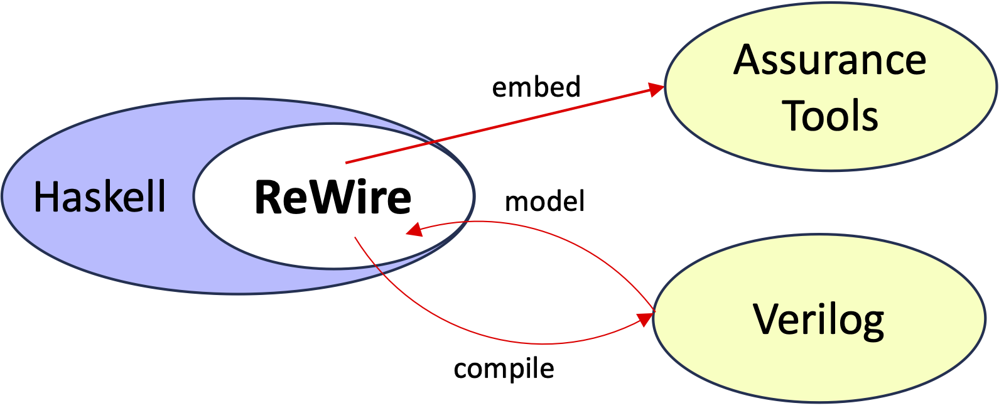

ReWire by Example
The ReWire functional high-level synthesis language (see below) is a functional language for designing, verifying, and implementing high assurance hardware. A hardware design in ReWire is also a Haskell program, and development of ReWire designs benefits from immediate feedback from its strong, static type system. As with Rust, ReWire's type system enforces invariants and guarantees at compile-time, thereby eliminating whole classes of bugs statically in a lightweight, automated manner. ReWire's type system can be extended by embedding designs into assurance tools (like Coq) to capture broad of automated checks and proof tools. ReWire designs can be compiled into Verilog and thereby interoperate with synthesis tools. ReWire is not a replacement for commodity hardware design languages like Verilog but rather it is a value-add for hardware design, implementation, and verification that interoperates with them.

Chapter 0: Before You Start
These are the tutorial notes for the ReWire language.
Prerequisites
Haskell
There's no way of learning ReWire without knowing basic Haskell. I'm a Mac guy so I would use homebrew as in
brew install ghc. This will install the Glasgow Haskell Compiler.brew install stack. Stack is a tool for installing haskell packages. It really makes things easy (well, easier).
Installing ReWire
ReWire is freely available. Here is the repository where you find the most recent version: ReWire source. Follow the directions -- stack makes it easy.
- This installation will build the ReWire compiler
rwcand - Install libraries (aka
ReWire-user) that allow you to program in ReWire with the Haskell interpreterghci.
Monads in Haskell
You have to be comfortable with the basics of "monad wrangling". You don't need to understand them in any great depth, but understanding the following ought to do:
- The
Identitymonad; - the state monad; and
- the
Maybemonad.
Understanding the basic usage of the StateT monad transformer is important. It's a shame that they are known as "transformer" instead of "constructor", because all a monad transformer is is a way to construct monads in a canonical fashion.
Monads are a concept from Category Theory. I love Category Theory, really I do. But I'd strongly recommend avoiding categorical treatments of monads if this is your first time with this material. Rather, check out Graham Hutton or Miran Lipovaca's texts as they're both excellent.
Reactive Resumption Monads
These are a particular family of monads that can be used to precisely describe synchronous concurrency (e.g., like clocked computations in hardware). They sound scary, but they're not. Check out the following papers of mine for the basics if you want. I suspect a lot of readers will just look at its usage in ReWire and get them well enough.
These monads are implemented in the Hackage package monad-resumption.
Haskell
Here are some good sources:
- Programming in Haskell by Graham Hutton. This is an excellent, step-by-step introduction to Haskell. Graham also has a lot of online resources (slides, videos, etc.) to go along with the book.
- Learn You a Haskell for Good by Miran Lipovaca. Highly amusing and informative; available here.
- A Gentle Introduction to Haskell by Hudak, Peterson, and Fasal. Available at http://www.haskell.org/tutorial/.
- Real World Haskell by Bryan O'Sullivan. Also available online (I believe).
- Google.
- Haskell for Grownups. These are some slides (HaskellForGrownups.pdf) I've presented here and there over the years as a quick intro to Haskell and what all the fuss is about.
Monad Wrangling 101
ReWire is a monadic language, meaning that it is organized in terms of various monads (which ones, we'll get to shortly). There are about a zillion tutorials on monads out there, and most of them are just terrible. This is a shame since the idea of a monad itself is really beautiful and, if you know how to use them correctly, they're a really important part of functional programming practice. And, furthermore, they are a really important part of programming language semantics, too, and consequently an important part of formal methods properly understood.
What this section does is introduce the monad idea through a sequence of simple language interpreters. As we add features to the language, we have to change the monad we use to define the new interpreter. We will see four interpreters whose core is a language of simple arithmetic expressions.
To see all of the monads discussed in this tutorial defined in one convenient Haskell file, download this: MonadWrangling.hs. These monad and monad transformer definitions are in the style of earlier versions of GHC, which were immensely easier to understand than the current mess.
Simple Arithmetic Expressions
The first interpreter, found in Arith.hs, defines a language Exp that has integer constants, negation, and addition. These correspond to the constructors Const, Neg, and Add of the Exp data type. The interpreter eval0 does not use a monad and should be fairly self-explanatory.
module Arith where
data Exp = Const Int | Neg Exp | Add Exp Exp
instance Show Exp where
show (Const i) = show i
show (Neg e) = "-" ++ show e
show (Add e1 e2) = show e1 ++ " + " ++ show e2
eval0 :: Exp -> Int
eval0 (Const i) = i
eval0 (Neg e) = - (eval0 e)
eval0 (Add e1 e2) = eval0 e1 + eval0 e2
c = Const 99
n = Neg c
a = Add c n
Loading this into GHCi gives you what you'd expect:
λ> a
99 + -99
λ> eval0 a
0
The Identity Monad is a Big Nothingburger
We introduce now the Identity monad, which doesn't really give you anything at all. I introduce it first because it uses Haskell's built-in monad syntax, and it's useful to meet that syntax first when the monad is just a big nothing. The code for this section is found in IdentityMonad.hs and IdentityMonadDo.hs.
First, here's the new interpreter eval1. The salient point is that eval0 and eval1 are doing the same thing, but what's all this return and >>= business? (They're explained below if you want to skip ahead.)
module IdentityMonad where
import Control.Monad.Identity -- this is new.
data Exp = Const Int | Neg Exp | Add Exp Exp
instance Show Exp where
show (Const i) = show i
show (Neg e) = "-" ++ show e
show (Add e1 e2) = show e1 ++ " + " ++ show e2
eval1 :: Exp -> Identity Int
eval1 (Const i) = return i
eval1 (Neg e) = eval1 e >>= \ v -> return (- v)
eval1 (Add e1 e2) = eval1 e1 >>= \ v1 -> eval1 e2 >>= \ v2 -> return (v1 + v2)
c = Const 99
n = Neg c
a = Add c n
The Identity monad has the following definition (it's actually a simplification).
data Identity a = Identity a -- apologies for overloading the constructors.
return :: a -> Identity a
return v = Identity v
(>>=) :: Identity a -> (a -> Identity b) -> Identity b
(Identity v) >>= f = f v
So, return just injects its argument into Identity. The operation >>= (a.k.a., "bind") boils down to a backwards apply. It's just a whole lot of applying and pattern-matching on the Identity constructor, signifying nothing. When you load all this into GHCi, you get just what you'd expect:
λ> a
99 + -99
λ> eval1 a
Identity 0
λ>
Lessons Learned
As people say, eval1 and eval0 are morally equivalent, in the sense that, if you were so inclined, you could prove the equality eval1 a = Identity (eval0 a) holds for any a.
Monadic Syntactic Sugar or Saccharine?
Haskell overloads its monad syntax, so when we see the >>= and return again, they will be typed in different monads than Identity. Overloading is great for some uses, because it removes clutter. I find for formal methods it can be kind of confusing. So, reader beware!
There is also another shorthand for >>= that is frequently used called do notation; it's defined as:
x >>= f = do
v <- x
f v
So, the clause of eval1 for Neg is as follows when written in do notation:
eval1 (Neg e) = do
v <- eval1 e
return (- v)
The code IdentityMonadDo.hs just reformulates the code in IdentityMonad.hs using do notation.
2nd Interpreter: Errors and Maybe
The code for this section is found in Errors.hs. This new interpreter adds a new arithmetic operation Div. I pasted in the eval0 with a new case for Div.
module Errors where
data Exp = Const Int | Neg Exp | Add Exp Exp
| Div Exp Exp -- new
instance Show Exp where
show (Const i) = show i
show (Neg e) = "-" ++ show e
show (Add e1 e2) = show e1 ++ " + " ++ show e2
show (Div e1 e2) = show e1 ++ " / " ++ show e2
-- | Same as before, but with a new case
eval0 :: Exp -> Int
eval0 (Const i) = i
eval0 (Neg e) = - (eval0 e)
eval0 (Add e1 e2) = eval0 e1 + eval0 e2
eval0 (Div e1 e2) = eval0 e1 `div` eval0 e2 -- new
a = Add c (Neg c)
where
c = Const 99
uhoh = Div (Const 1) (Const 0) -- new
Note that, when you run the Div-extended version of eval0, things don't always end well:
λ> uhoh
1 / 0
λ> eval0 uhoh
*** Exception: divide by zero
λ>
Why can't we just check for 0?
Think about it this way, what should I replace ???? with below? There's no way of handling that exceptional case and it crashes the program.
eval0 (Div e1 e2) = if v2 == 0 then ???? else eval0 e1 `div` v2
where
v2 = eval0 e2
But with the Maybe monad, we can use its Nothing constructor for this erroneous case; recall the definition of the Maybe data type:
data Maybe a = Nothing | Just a
Here's the definition of eval2 whhich is typed in the Maybe monad:
eval2 :: Exp -> Maybe Int -- N.b., the new type
eval2 (Const i) = return i
eval2 (Neg e) = do
v <- eval2 e
return (- v)
eval2 (Add e1 e2) = do
v1 <- eval2 e1
v2 <- eval2 e2
return (v1 + v2)
eval2 (Div e1 e2) = do
v1 <- eval2 e1
v2 <- eval2 e2
if v2==0 then Nothing else return (v1 `div` v2) -- fill in ???? with Nothing
λ> uhoh
1 / 0
λ> eval2 uhoh
Nothing
Maybe Under the Hood
Below is the definition of the Maybe monad. The way to think of a computation x >>= f is that, if x is returns some value (i.e., it's Just v), then just proceed normally. If an exception is thrown by computing x (i.e., it's Nothing), then the whole computation x >>= f
data Maybe a = Nothing | Just a
return :: a -> Maybe a
return v = Just v
(>>=) :: Maybe a -> (a -> Maybe b) -> Maybe b
(Just v) >>= f = f v
Nothing >>= f = Nothing
3rd Interpreter: Adding a Register
The code for this section is Register.hs.
module Register where
import Control.Monad.State
data Exp = Const Int | Neg Exp | Add Exp Exp
| X -- new register X
instance Show Exp where
show (Const i) = show i
show (Neg e) = "-" ++ show e
show (Add e1 e2) = show e1 ++ " + " ++ show e2
show X = "X"
-- | Just a copy
eval2 :: Exp -> Maybe Int
eval2 (Const i) = return i
eval2 (Neg e) = do
v <- eval2 e
return (- v)
eval2 (Add e1 e2) = do
v1 <- eval2 e1
v2 <- eval2 e2
return (v1 + v2)
eval2 X = undefined -- How do we do handle this?
Here's how we handle this:
- Create a new monad from
Identitywith anIntregister:StateT Int Identity - This new monad has two operations
getthat reads the current value of the registerputthat updates the value of the register
StateT Intis known as a monad transformer
The code below does just that
readX :: StateT Int Identity Int
readX = get
eval3 :: Exp -> StateT Int Identity Int
eval3 (Const i) = return i
eval3 (Neg e) = do
v <- eval3 e
return (- v)
eval3 (Add e1 e2) = do
v1 <- eval3 e1
v2 <- eval3 e2
return (v1 + v2)
eval3 X = readX
4th: Errors + Register
The code for this is RegisterError.hs. In this example, we want to add both a possibly error-producing computation along with the register. This is done mostly through monadic means.
module Register where
import Control.Monad.State
data Exp = Const Int | Neg Exp | Add Exp Exp
| Div Exp Exp -- Both errors
| X -- and a register X
instance Show Exp where
show (Const i) = show i
show (Neg e) = "-" ++ show e
show (Add e1 e2) = show e1 ++ " + " ++ show e2
show (Div e1 e2) = show e1 ++ " / " ++ show e2
show X = "X"
Here's how we handle this:
- Create a new monad from
Maybewith anIntregister:StateT Int Maybe - This new monad has two operations
getthat reads the current value of the registerputthat updates the value of the register
StateT Intis known as a monad transformer
The code below does just that
readX :: StateT Int Maybe Int
readX = get
eval3 :: Exp -> StateT Int Maybe Int
eval3 (Const i) = return i
eval3 (Neg e) = do
v <- eval3 e
return (- v)
eval3 (Add e1 e2) = do
v1 <- eval3 e1
v2 <- eval3 e2
return (v1 + v2)
eval3 (Div e1 e2) = do
v1 <- eval3 e1
v2 <- eval3 e2
if v2==0 then lift Nothing else return (v1 `div` v2)
-- N.b., this is new.
eval3 X = readX
Hello Worlds
This first chapter introduces ReWire and collects the simplest possible examples.
What is ReWire?
ReWire is a domain-specific language embedded in the Haskell functional programming language (https://haskell.org). Every ReWire program is a Haskell program that can be executed just as any other Haskell program. This fact is simple and also very powerful, because it means that development of a hardware design can proceed incrementally, one function at a time, with the resulting new code being type-checked and/or tested. Once a developer is satisfied with their ReWire design, they can compile it automatically into synthesizable HDLs (hardware definition languages) like Verilog, VHDL, and FIRRTL.

Mealy Machines and ReWire types
There's a mental model of digital circuitry used by hardware designers known as a Mealy machine. The flavor favored by hardware designers is portrayed below, which will seem odd to those of us who first heard of them from a class in theoretical computer science (e.g., https://en.wikipedia.org/wiki/Mealy_machine). Mealy machines are finite state machines combined with a clock that on each clock "tick" consume an input of type i, update a store of type s, and produce an output of type o.

In ReWire, there is a type corresponding to the Mealy machine above, the monadic type:
ReacT i o (StateT s Identity) ()
And, because it occurs so frequently, we refer to it as a device type some times. Things of this type are those that can be compiled to hardware.
Simple Mealy
The "theoretical computer science" picture of a Mealy machine is seen below:

Here si is the start state, and there are two other states, s0 and s1. There is also an alphabet consisting of 0 and 1. On the transitions, a red digit denotes an input and a blue digit denotes an output, so, in the machine is currently in state si and receives a 1 as input, it outputs a 0 and proceeds to state s1.
The ReWire code described in the section is found here, SimpleMealy.hs, and what follows is a line-by-line description.
First thing is to import a library with ReWire definitions, etc. What's DataKinds? Don't worry about it for now. Collected in a comment is a tabular form of the state transitions.
{-# LANGUAGE DataKinds #-}
import ReWire
-- Current State | Input | Output | Next State
-- --------------------------------------------
-- si 0 0 s0
-- si 1 0 s1
-- s0 0 0 s0
-- s0 1 1 s1
-- s1 0 1 s0
-- s1 1 0 s1
Next, let's define the alphabet:
data Alphabet = Zero | One
Alphabet defines both the inputs and outputs of this Mealy machine.
Each of the three states and their transitions are defined in the following. Before focusing on the type, note first how each line below corresponds directly to a line in the table above. E.g., if the machine is in state si and receives 0 as input, it produces output 0, and proceeds to state s0.
si , s0 , s1 :: Alphabet -> ReacT Alphabet Alphabet Identity ()
si Zero = signal Zero >>= s0
si One = signal Zero >>= s1
s0 Zero = signal Zero >>= s0
s0 One = signal One >>= s1
s1 Zero = signal One >>= s0
s1 One = signal Zero >>= s1
We'll return to the types of si, s0, and s1 momentarily.
Finally, we need to designate a start state, just as with any state machine definition.
start :: ReacT Alphabet Alphabet Identity ()
start = signal Zero >>= si
Why this type ReacT Alphabet Alphabet Identity ()?
We know the type will have the form ReacT i o m a for some types i, o, and a and monad m.
- The input alphabet is
Alphabet, soiisAlphabet. - The output alphabet is
Alphabet, soois alsoAlphabet. - We are not using internal storage like registers, so monad
mcan be justIdentity.
Finally, why () for return type a? Here, we have a choice, but it doesn't matter in the least what we pick. Because start never, ever, terminates under any circumstances, it won't ever return any value, so we may as well pick ().
This non-termination requirement on start is important and makes complete sense if you think about it. Hardware never terminates (unless it's unplugged).
The Obligatory Fibonacci Example
The following Haskell code (the file is called Fib.hs) creates an infinite list of Ints in a conventional manner using the fibgen function.
module Fibonacci where
fibs :: [Int]
fibs = fibgen 0 1
where
fibgen :: Int -> Int -> [Int]
fibgen n m = n : fibgen m (n + m)
Loading Fib.hs into GHCi, you can see that it calculates the familiar Fibonacci sequence:
ghci> take 10 fibs
take 10 fibs
[0,1,1,2,3,5,8,13,21,34]
Making Hardware Out of This.
In the ReWire code below, fibdev plays the same role as fibgen above. For the moment, just ignore the monadic type, ReacT Bit (W 8) Identity (). (I'll explain its significance shortly.) Instead of using Haskell's Int type, we will compute over eight bit words (i.e., W 8). There is also a definition of start, which is a special symbol that unsurprisingly specifies how to start the device.
What fibdev does is, given two words n and m, it puts n on the output port using signal and accepts a new input b off of the input port. If bit b is 1, then it continues on. However, if b is 0, then it calls itself on m and m + n just like fibgen above.
{-# LANGUAGE DataKinds #-}
import Prelude hiding ((+))
import ReWire
import ReWire.Bits
start :: ReacT Bit (W 8) Identity ()
start = fibdev (lit 0) (lit 1)
fibdev :: W 8 -> W 8 -> ReacT Bit (W 8) Identity ()
fibdev n m = do b <- signal n
if b then fibdev n m else fibdev m (n + m)
Lessons Learned.
There are some lessons to be learned from this example.
- Just like a state machine, every ReWire device has to have a
start. - Most ReWire programs will begin with something like the top three lines of the previous ReWire code.
- There may be Haskell
Preludeoperations that have a particular meaning in ReWire (e.g.,+), and so they may need to be hidden explicitly. - The other parts of that incantation is performed to use built-in words and their operations.
- There may be Haskell
Carry Save Addition
There are three carry-save adders in the tutorial, CSA.hs, SCSA.hs, and PCSA.hs, and the first of these is explained in detail below.
Carry save addition (https://en.wikipedia.org/wiki/Carry-save_adder) is defined as function f:
f :: W 8 -> W 8 -> W 8 -> (W 8, W 8)
f a b c = ( ((a .&. b) .|. (a .&. c) .|. (b .&. c) ) <<. lit 1 , (a ^ b) ^ c )
Here, I define f using ReWire's built-in word constructor, picking W 8 for the sake of concreteness.
I'll define a few constants for convenience in a running example.
_40 , _25 , _20 , _41 , _0 :: W 8
_40 = lit 40
_25 = lit 25
_20 = lit 20
_41 = lit 41
_0 = lit 0
Using GHCi, we can test it out, like any Haskell function:
λ> :t f
f :: W 8 -> W 8 -> W 8 -> (W 8, W 8)
λ> f _40 _25 _20
(Vector [False,False,True,True,False,False,False,False],Vector [False,False,True,False,False,True,False,True])
What's this mess? W 8 values are represented internally using Haskell's Data.Vector library and, well, it ain't pretty. There is a ReWire library you can import to make all this more palatable called ReWire.Interactive:
λ> pretty (f _40 _25 _20)
(48,37)
λ> pretty (f _41 _25 _20)
(50,36)
λ>
Making a basic carry save adder
-- |
-- | Example 1. CSA
-- |
-- | The only thing this does is take its inputs i, computes csa on them, and
-- | output the results every clock cycle.
csa :: (W 8, W 8, W 8) -> ReacT (W 8, W 8, W 8) (W 8, W 8) Identity ()
csa (a, b, c) = do
abc' <- signal (f a b c)
csa abc'
start :: ReacT (W 8, W 8, W 8) (W 8, W 8) Identity ()
start = csa (_0, _0, _0)
First, csa consumes its three inputs a, b, and c as a tuple. Then, it computes the carry save addition on these and puts the result on the output port, signal (f a b c). Finally, it obtains the next inputs, abc' and continues.
What does the type of csa mean? It's worth contemplating the type of csa's codomain, which is ReacT (W 8, W 8, W 8) (W 8, W 8) Identity ().
- The input type is
(W 8, W 8, W 8), meaning that every it takes threeW 8s each clock cycle; - The output type is
(W 8, W 8), meaning that every it produces twoW 8s each clock cycle; and - It does not use any internal storage or registers, hence the
Identitymonad is used rather than a state monad.
Running it in GHCi
You can run this using pretty and runP from ReWire.Interactive. First, define some inputs that look familiar:
inputs :: [(W 8 , W 8 , W 8)]
inputs = (_40 , _25 , _20)
: (_41 , _25 , _20)
: (_40 , _25 , _20) : []
λ> :t pretty
pretty :: Pretty a => a -> IO ()
λ> pretty $ runP start ((_0 , _0 , _0) , (_0 , _0 )) inputs
((0,0,0),(0,0)) :> ((40,25,20),(0,0)) :> ((41,25,20),(48,37)) :> ((40,25,20),(50,36)) :+> Nothing
(WARNING: ReWire.Interactive is currently in super-king-kong-major-hacky form right now.)
Compiling it with RWC
First, here's the entire file as it stands:
{-# LANGUAGE DataKinds #-}
import Prelude hiding ((^))
import ReWire
import ReWire.Bits
-- | ReWire compiler will complain if this is imported
import ReWire.Interactive
f :: W 8 -> W 8 -> W 8 -> (W 8, W 8)
f a b c = ( ((a .&. b) .|. (a .&. c) .|. (b .&. c) ) <<. lit 1 , (a ^ b) ^ c )
-- Constants for a running example.
_40 , _25 , _20 , _41 , _0 :: W 8
_40 = lit 40
_25 = lit 25
_20 = lit 20
_41 = lit 41
_0 = lit 0
-- |
-- | Example 1. CSA
-- |
-- | The only thing this does is take its inputs i, computes csa on them, and
-- | output the results every clock cycle.
csa :: (W 8, W 8, W 8) -> ReacT (W 8, W 8, W 8) (W 8, W 8) Identity ()
csa (a, b, c) = do
abc' <- signal (f a b c)
csa abc'
start :: ReacT (W 8, W 8, W 8) (W 8, W 8) Identity ()
start = csa (_0, _0, _0)
-- | ReWire compiler will complain if this is here (i.e., comment it before compiling):
inputs :: [(W 8 , W 8 , W 8)]
inputs = (_40 , _25 , _20)
: (_41 , _25 , _20)
: (_40 , _25 , _20) : []
Pro-tip. Because ReWire doesn't know about things likes lists, ReWire.Interactive and the definition of inputs need to be commented out before compiling with rwc. Otherwise, you will receive a non-informative error message like this:
$ rwc CSA.hs --verilog
Control/Monad/Identity.hs:
Error: File not found in load-path
$
Assuming these are now commented out, you can proceed to compile CSA.hs with:
$ ls -l CSA.*
-rw-r--r-- 1 william.harrison staff 1039 Jun 13 09:02 CSA.hs
$ rwc CSA.hs --verilog
$ ls -l CSA.*
-rw-r--r-- 1 william.harrison staff 1039 Jun 13 09:02 CSA.hs
-rw-r--r-- 1 william.harrison staff 2159 Jun 13 09:04 CSA.v
$
Simple Processors
This chapter describes several simple processors.
Tiny ISA
We now describe a simple processor with a tiny instruction set (hence the name TinyISA.hs).
type W6 = W 6
type W8 = W 8
data Reg = R0 | R1 | R2 | R3
type Addr = W6
data Instr = NOP
| LD Addr
| ST Addr
| NAND Reg Reg Reg
| BNZ Addr
data Ins = Ins { instrIn :: Instr,
dataIn :: W 8 }
data Out = Out { weOut :: Bit,
addrOut :: Addr,
dataOut :: W 8 }
data RegFile = RegFile { r0 :: W 8, r1 :: W 8, r2 :: W 8, r3 :: W 8,
pc :: Addr, inputs :: Ins, outputs :: Out }
type S = StateT RegFile Identity
type Dev = ReacT Ins Out S
-- read, write, and increment the PC
getPC :: S Addr
getPC = do s <- get
return (pc s)
putPC :: Addr -> S ()
putPC a = do s <- get
put (s { pc = a })
incrPC :: S ()
incrPC = do pc <- getPC
putPC (pc + lit 1)
-- read and write each register
getReg :: Reg -> S (W 8)
getReg R0 = get >>= return . r0
getReg R1 = get >>= return . r1
getReg R2 = get >>= return . r2
getReg R3 = get >>= return . r3
putReg :: Reg -> W 8 -> S ()
putReg R0 b = get >>= \ s -> put (s { r0 = b })
putReg R1 b = get >>= \ s -> put (s { r1 = b })
putReg R2 b = get >>= \ s -> put (s { r2 = b })
putReg R3 b = get >>= \ s -> put (s { r3 = b })
getOut :: S Out
getOut = do
s <- get
return (outputs s)
putOut :: Out -> S ()
putOut o = do
s <- get
put (s { outputs = o })
getIns :: S Ins
getIns = do
s <- get
return (inputs s)
getDataIn :: S (W 8)
getDataIn = do
i <- getIns
return (dataIn i)
getInstr :: S Instr
getInstr = do
i <- getIns
return (instrIn i)
putIns :: Ins -> S ()
putIns i = do
s <- get
put (s { inputs = i })
tick :: Dev ()
tick = do o <- lift getOut
i <- signal o
lift (putIns i)
putWeOut :: Bit -> S ()
putWeOut b = do o <- getOut
putOut (o { weOut = b })
putAddrOut :: Addr -> S ()
putAddrOut a = do o <- getOut
putOut (o { addrOut = a })
putDataOut :: W 8 -> S ()
putDataOut d = do o <- getOut
putOut (o { dataOut = d })
Crossbar Switch
What’s a Crossbar Switch?
To perform this exercise, I relied primarily on two sources to explain what a crossbar switch is; they are:
Given these explanations, I generated a Haskell implementation of a crossbar switch like function (see CrossbarSwitch.hs below). All the Haskell and ReWire code for this example can be found below.
What follows is an explanation of this code. First, we consider the Haskell definition of a crossbar switch, written in monadic style. Then, we transform the Haskell definition of the switch into proper ReWire. This is important because it gives you a practical introduction to the differences between Haskell and ReWire..
Just write it in Haskell first, then add a few bits to get your program into ReWire.
The usual mode of program development is to first write a version of the desired application in Haskell using the concepts described in the Language Reference section. The reasons to do this boil down to the GHC compiler being vastly more mature than the ReWire compiler, and so, for example, error messages are much more informative. Once all the kinks as it were are worked out in Haskell (e.g., getting something that typechecks, etc.), make a number of small tweeks to get your program into the ReWire subset of Haskell. This section of the tutorial introduces the reader to this mode of program development.
ReWire Prelude
In the same manner as the Glasgow Haskell Compiler and other Haskell implementations, we are compiling a list of standard definitions into a prelude file, ReWirePrelude.hs. This file is, in effect, a dirty snowball of definitions that we are accumulating with the intent of ultimately making it part of the standard ReWire implementation. For now, to use it, you must explicitly import it.
ReWirePrelude.hs includes definitions for bits (Bit) and words of various sizes (e.g., W8 and W32) as well as functions on those primitive types (e.g., rotateR2). The particular file we use can be found here.
What follows is a crossbar switch function written in Haskell. We will take this as an input specification, by which we mean that it is not terribly important to actually understand what the crossbar function is calculating. Rather, what is interesting is what must change in this specification to transform it into a proper ReWire specification.
{-# LANGUAGE DataKinds #-}
import Prelude hiding ((^), (+))
import ReWire
switch :: t -> t -> Bool -> (t, t)
switch x _ True = (x,x)
switch x y False = (x,y)
type W8 = W 8
data Maybe4 = Maybe4 (Maybe W8) (Maybe W8) (Maybe W8) (Maybe W8)
type Bool16 = (Bool,Bool,Bool,Bool,Bool,Bool,Bool,Bool,Bool,Bool,Bool,Bool,Bool,Bool,Bool,Bool)
crossbar :: Maybe4 -> Bool16 -> Maybe4
crossbar (Maybe4 x10 x20 x30 x40) (c11,c12,c13,c14,c21,c22,c23,c24,c31,c32,c33,c34,c41,c42,c43,c44)
= let
(x41,y31) = switch x40 Nothing c41
(x42,y32) = switch x41 Nothing c42
(x43,y33) = switch x42 Nothing c43
(_,y34) = switch x43 Nothing c44
(x31,y21) = switch x30 y31 c31
(x32,y22) = switch x31 y32 c32
(x33,y23) = switch x32 y33 c33
(_,y24) = switch x33 y34 c34
(x21,y11) = switch x20 y21 c21
(x22,y12) = switch x21 y22 c22
(x23,y13) = switch x22 y23 c23
(_,y14) = switch x23 y24 c24
(x11,y10) = switch x10 y11 c11
(x12,y20) = switch x11 y12 c12
(x13,y30) = switch x12 y13 c13
(_,y40) = switch x13 y14 c14
in
Maybe4 y10 y20 y30 y40
data Inp = Inp Maybe4 Bool16 | NoInput
data Out = Out Maybe4 | Nix
dev :: Inp -> ReacT Inp Out Identity ()
dev (Inp m4 b16) = signal (Out (crossbar m4 b16)) >>= dev
dev NoInput = signal Nix >>= dev
start :: ReacT Inp Out Identity ()
start = signal Nix >>= dev
Crossbar Switch in ReWire This section considers the ReWire version of the crossbar switch. The whole code is available here. These two implementations are almost the same, but there are differences. We will go through the code in detail to highlight the differences.
Here we have commented out the module and import declarations, except for the ReWirePrelude. The main ReWire file does not belong in a module. Note that the monad definitions from Control.Monad are built-in to ReWire, and so, they should not be imported.
{- module CrossbarSwitch where
import Control.Monad.Identity import Control.Monad.State import Control.Monad.Resumption.Reactive
type I = Identity -}
import ReWirePrelude Note that the switch function has polymorphic type below. ReWire does not allow polymorphically typed expressions, and so, for that reason, we use an INLINE directive. This directive informs the ReWire frontend to inline that function wherever it occurs. This has the effect of eliminating the polymorphic function. An alternative would be to simply rewrite the type declaration of switch so that it had a simple (i.e., variable free) type. Note also that the Maybe4 declaration is written with no free variables; i.e., Maybe4 isn’t polymorphic either.
It is worth emphasizing that each function declaration in ReWire must have an accompanying type declaration.
switch :: t -> t -> Bool -> (t, t) {-# INLINE switch #-} switch x y True = (x,x) switch x y False = (x,y)
data Maybe4 = Maybe4 (Maybe W8) (Maybe W8) (Maybe W8) (Maybe W8)
The code for crossbar below has several changes. For one, it is no longer declared with a let declaration, but rather uses an equivalent where formulation. Semantically, where and let are equivalent; that is, let
crossbar :: Maybe4 -> (Bool,Bool,Bool,Bool,Bool,Bool,Bool,Bool,Bool,Bool,Bool,Bool,Bool,Bool,Bool,Bool) -> Maybe4 crossbar (Maybe4 x10 x20 x30 x40) (c11,c12,c13,c14,c21,c22,c23,c24,c31,c32,c33,c34,c41,c42,c43,c44) = Maybe4 y10 y20 y30 y40 where (x41,y31) = switch x40 Nothing c41 (x31,y21) = switch x30 y31 c31 (x21,y11) = switch x20 y21 c21 (x42,y32) = switch x41 Nothing c42 (x32,y22) = switch x31 y32 c32 (x22,y12) = switch x21 y22 c22 (x11,y10) = switch x10 y11 c11 (x12,y20) = switch x11 y12 c12 (x43,y33) = switch x42 Nothing c43 (x33,y23) = switch x32 y33 c33 (x23,y13) = switch x22 y23 c23 (x13,y30) = switch x12 y13 c13 (x44,y34) = switch x43 Nothing c44 (x34,y24) = switch x33 y34 c34 (x24,y14) = switch x23 y24 c24 (x14,y40) = switch x13 y14 c14 Below are the input and output types for the device, Inp and Out. One thing that stands out style-wise when compared to Haskell is that we don’t use a type synonym for the long tuple of Bools. In Haskell, one would typically write something like type Bool16 = (Bool,...,Bool) just for syntactic convenience. As it stands, type synonyms are unimplemented in ReWire. This is, again, on the aforementioned to-do list of simple extensions to ReWire.
data Inp = Inp Maybe4
(Bool,Bool,Bool,Bool,Bool,Bool,Bool,Bool,Bool,Bool,Bool,Bool,Bool,Bool,Bool,Bool)
| NoInput
data Out = Out Maybe4 | Nix Below is the device declaration. The built-in identity monad in ReWire is written I (rather than Identity that was imported from Control.Monad in the Haskell version). Note that the dev has been replaced by the semantically equivalent \ i -> dev i below. This is because ReWire is a 1st-order language and you cannot pass the function dev to the other function >>=. It is a focus of current research to extend ReWire to higher-order.
devcrossbar :: ReT Inp Out I () devcrossbar = signal Nix >>= \ i -> dev i
dev :: Inp -> ReT Inp Out I () dev (Inp m4 b16) = signal (Out (crossbar m4 b16)) >>= \ i -> dev i dev NoInput = signal Nix >>= \ i -> dev i Last, but not least, is that every ReWire specification must contain a start declaration. The start symbol must have type ReT Inp Out I ().
start :: ReT Inp Out I () start = devcrossbar Compiling with the ReWire Compiler Once the ReWire specification is complete, we can compile with the ReWire compiler rwc:
bill$ rwc RWCrossbar.hs -o RWC.vhd bill$ ls -l RWC.vhd -rwxr-xr-x 1 bill staff 61024 Jun 14 14:11 RWC.vhd Note that, depending how successfully one’s translation into ReWire is, one may receive error messages fro the ReWire compiler. These are improving, although there is admittedly much room for improvement as of this writing.